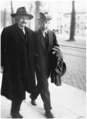

With Bohr at the 1930 Solvay Conference
和玻尔在1927年索尔维会议上
While others continued to develop quantum mechanics, undaunted by the uncertainties at its core, Einstein persevered in his lonelier quest for a more complete explanation of the universe—a unified field theory that would tie together electricity and magnetism and gravity and quantum mechanics. In the past, his genius had been in finding missing links between different theories. The opening sentences of his 1905 general relativity and light quanta papers were such examples.*
处于量子力学核心的不确定性并没有使许多人畏惧，他们继续发展着量子力学。然而此时，爱因斯坦却更加孤独地试图对宇宙做出更加完备的解释，寻找一种能够将电磁、引力和量子力学结合在一起的统一场论。他的天才一向体现在发现不同理论之间缺失的环节，其1905年狭义相对论和光量子论文的开头便是这样的例子。
He hoped to extend the gravitational field equations of general relativity so that they would describe the electromagnetic field as well. “The mind striving after unification cannot be satisfied that two fields should exist which, by their nature, are quite independent,” Einstein explained in his Nobel lecture. “We seek a mathematically unified field theory in which the gravitational field and the electromagnetic field are interpreted only as different components or manifestations of the same uniform field.”1
他希望拓展广义相对论的引力场方程，使之也能描述电磁场。“追求统一的心灵不可能满足于存在着两种本质上非常独立的场，”爱因斯坦在其诺贝尔奖演说中说，“我们寻求一种在数学上统一的场论，在这一理论中，引力场和电磁场仅仅被解释为同一种均一场的不同分量或显现。”
Such a unified theory, he hoped, might make quantum mechanics compatible with relativity. He publicly enlisted Planck in this task with a toast at his mentor’s sixtieth birthday celebration in 1918: “May he succeed in uniting quantum theory with electrodynamics and mechanics in a single logical system.”2
他希望这样一种理论能够使量子力学与相对论相容。在1918年普朗克60岁生日祝词中，爱因斯坦公然将普朗克拉入了同一战壕：“但愿他能够将量子理论与电动力学和力学成功地统一到同一个逻辑系统中。”
Einstein’s quest was primarily a procession of false steps, marked by increasing mathematical complexity, that began with his reacting to the false steps of others. The first was by the mathematical physicist Hermann Weyl, who in 1918 proposed a way to extend the geometry of general relativity that would, so it seemed, serve as a geometrization of the electromagnetic field as well.
爱因斯坦的求索主要是由一连串失误构成的，其中涉及的数学也越来越复杂。它始于爱因斯坦对他人失误的反应。在这些人中，首先是数学物理学家外尔，他1918年提出了一种拓展广义相对论几何的方法，使之看起来也能将电磁场几何化。
Einstein was initially impressed. “It is a first-class stroke of genius,” he told Weyl. But he had one problem with it: “I have not been able to settle my measuring-rod objection yet.”3
爱因斯坦开始时很有兴趣。“这是第一流的天才之举，”他对外尔说。但他有一个问题：“我尚不能消解我的量杆反驳（meas-uring-rod objection）。”
Under Weyl’s theory, measuring rods and clocks would vary depending on the path they took through space. But experimental observations showed no such phenomenon. In his next letter, after two more days of reflection, Einstein pricked his bubbles of praise with a wry putdown. “Your chain of reasoning is so wonderfully self-contained,” he wrote Weyl. “Except for agreeing with reality, it is certainly a grand intellectual achievement.”4
依照外尔的理论，量杆和时钟会随着它们在空间中走过的路径而变化，然而实验观测却表明并没有这种现象发生。爱因斯坦又考虑了两天，之后写了一封信，在褒奖的同时也做了贬低。“您的推理过程美妙地自成一体，”他对外尔说，“除了未与实在相合，它的确是一项了不起的思想成就。”
Next came a proposal in 1919 by Theodor Kaluza, a mathematics professor in Königsberg, that a fifth dimension be added to the four dimensions of spacetime. Kaluza further posited that this added spatial dimension was circular, meaning that if you head in its direction you get back to where you started, just like walking around the circumference of a cylinder.
1919年，柯尼斯堡的数学教授西奥多·卡鲁扎建议给四维时空加上第五维。他又进一步假设，这一额外的空间维是圆形的，也就是说，如果你沿着它的方向往前走，你又会回到开始的位置，就像围绕一个圆柱行走一样。
Kaluza did not try to describe the physical reality or location of this added spatial dimension. He was, after all, a mathematician, so he didn’t have to. Instead, he devised it as a mathematical device. The metric of Einstein’s four-dimensional spacetime required ten quantities to describe all the possible coordinate relationships for any point. Kaluza knew that fifteen such quantities are needed to specify the geometry for a five-dimensional realm.5
卡鲁扎并不试图描述这一额外空间维的物理实在性或位置，而只是把它当成一种数学工具。毕竟，他是一个数学家，没有必要这样做。对于任何一个点，爱因斯坦四维时空的度规都要求有10个分量来描述所有可能的坐标关系。卡鲁扎知道，对于五维区域来说，需要有15个这样的分量来确定它的几何。
When he played with the math of this complex construction, Kaluza found that four of the extra five quantities could be used to produce Maxwell’s electromagnetic equations. At least mathematically, this might be a way to produce a field theory unifying gravity and electromagnetism.
在摆弄这种复杂的数学结构时，卡鲁扎发现，可以由额外5个量中的4个来导出麦克斯韦的电磁方程。至少在数学上，这种方法也许可以将引力与电磁力统一在一起。
Once again, Einstein was both impressed and critical. “A five-dimensional cylinder world never dawned on me,” he wrote Kaluza. “At first glance I like your idea enormously.”6 Unfortunately, there was no reason to believe that most of this math actually had any basis in physical reality. With the luxury of being a pure mathematician, Kaluza admitted this and challenged the physicists to figure it out. “It is still hard to believe that all of these relations in their virtually unsurpassed formal unity should amount to the mere alluring play of a capricious accident,” he wrote. “Should more than an empty mathematical formalism be found to reside behind these presumed connections, we would then face a new triumph of Einstein’s general relativity.”
这又一次引起了爱因斯坦的兴趣和疑问。“我从未想过一个五维的圆柱世界，”他给卡鲁扎写信说，“你的思想初看起来很让我喜欢。” 但不幸的是，没有理由认为这种数学能有什么实际的物理基础。身为纯粹数学家的卡鲁扎承认这一点，并希望物理学家能够解决这个问题。“很难相信，所有这些具有无与伦比的形式统一性的关系竟然只是偶然的巧合，”他写道，“如果能够在这些假定的关联背后找到一种超出空洞的数学形式的东西，爱因斯坦的广义相对论将获得一场新的胜利。”
By then Einstein had become a convert to the faith in mathematical formalism, which had proven so useful in his final push toward general relativity. Once a few issues were sorted out, he helped Kaluza get his paper published in 1921, and followed up later with his own pieces.
那时爱因斯坦对数学形式已经相当信任，因为它曾经对广义相对论的最终完成立下汗马功劳。在解决了几个问题之后，他帮助卡鲁扎在1921年发表了论文，接着又亲自写了几篇文章。
The next contribution came from the physicist Oskar Klein, son of Sweden’s first rabbi and a student of Niels Bohr. Klein saw a unified field theory not only as a way to unite gravity and electromagnetism, but he also hoped it might explain some of the mysteries lurking in quantum mechanics. Perhaps it could even come up with a way to find “hidden variables” that could eliminate the uncertainty.
另一项贡献是物理学家奥斯卡·克莱因做出的，他是瑞典首位拉比的儿子，也是玻尔的学生。克莱因不仅视统一场论为统一引力和电磁力的方法，也希望能够用它来解释量子力学中潜藏的一些秘密，甚至可以由它找到一种发现“隐变量”的方法，从而消除不确定性。
Klein was more a physicist than a mathematician, so he focused more than Kaluza had on what the physical reality of a fourth spatial dimension might be. His idea was that it might be coiled up in a circle, too tiny to detect, projecting out into a new dimension from every point in our observable three-dimensional space.
克莱因更多是一名物理学家而不是数学家，因此他比卡鲁扎更关注第四个空间维对应着什么物理实在。他认为，这一维度也许卷缩成了一个看不见的小圆，在我们可见的三维空间中的每一点都投射出一个新的维度。
It was all quite ingenious, but it didn’t turn out to explain much about the weird but increasingly well-confirmed insights of quantum mechanics or the new advances in particle physics. The Kaluza-Klein theories were put aside, although Einstein over the years would return to some of the concepts. In fact, physicists still do today. Echoes of these ideas, particularly in the form of extra compact dimensions, exist in string theory.
这些想法的确很天才，但对于虽然怪异但却越来越得到证实的量子力学以及粒子物理学的新进展，它并不能解释多少。于是，卡鲁扎-克莱因理论暂时被放弃，尽管爱因斯坦多年以后还会重新捡起其中的某些概念。事实上，直到今天仍然有物理学家在这样做，弦理论中所谓的额外紧致维度就体现了这些思想。
Next into the fray came Arthur Eddington, the British astronomer and physicist responsible for the famous eclipse observations. He refined Weyl’s math by using a geometric concept known as an affine connection. Einstein read Eddington’s ideas while on his way to Japan, and he adopted them as the basis for a new theory of his own. “I believe I have finally understood the connection between electricity and gravitation,” he wrote Bohr excitedly. “Eddington has come closer to the truth than Weyl.”7
接下来出场的是英国天文学家和物理学家爱丁顿，他曾领导了著名的日食观测。他用一种被称为仿射联络的几何概念完善了外尔的数学。爱因斯坦在前往日本途中读到了爱丁顿的想法，并把它当成了自己新理论的基础。“我终于理解了电与引力的关系，”他激动地给玻尔写信说，“爱丁顿比外尔更接近真理。”
By now the siren song of a unified theory had come to mesmerize Einstein. “Over it lingers the marble smile of nature,” he told Weyl.8On his steamer ride through Asia, he polished a new paper and, upon arriving in Egypt in February 1923, immediately mailed it to Planck in Berlin for publication. His goal, he declared, was “to understand the gravitational and electromagnetic field as one.”9
现在，统一理论的塞壬之歌（siren song） 已经开始令爱因斯坦迷醉。“在它之上传来了大自然的冷笑。”他对外尔说。 乘船通过亚洲期间，爱因斯坦打磨出了一篇新的论文。1923年2月一到埃及，他就把论文寄给柏林的普朗克发表。他宣称自己的目标是“能够统一地理解引力场和电磁场”。
Once again, Einstein’s pronouncements made headlines around the world. “Einstein Describes His Newest Theory,” proclaimed the New York Times. And once again, the complexity of his approach was played up. As one of the subheads warned: “Unintelligible to Laymen.”
爱因斯坦的声明再次成为全世界的头条新闻。“爱因斯坦描述了他的最新理论。”《纽约时报》说。而且，他所采用方法的复杂性又一次被夸大。正如一个副标题所警告的：“外行无法理解。”
But Einstein told the newspaper it was not all that complicated. “I can tell you in one sentence what it is about,” the reporter quoted him as saying. “It concerns the relation between electricity and gravitation.” He also gave credit to Eddington, saying, “It is grounded on the theories of the English astronomer.”10
不过爱因斯坦告诉记者，它并非如此复杂。“我可以用一句话讲清楚它的意思，”记者引用他的话说，“它关乎电与引力的关系。”他还感谢了爱丁顿，说“它是基于这位英国天文学家的理论”。
In his follow-up articles that year, Einstein made explicit that his goal was not merely unification but finding a way to overcome the uncertainties and probabilities in quantum theory. The title of one 1923 paper stated the quest clearly: “Does the Field Theory Offer Possibilities for the Solution of Quanta Problems?”11
在当年的后续论文中，爱因斯坦明确表示他的目标不仅是统一，而且要找到一种方法来克服量子理论中的不确定性和概率。这种求索显见于1923年的一篇论文标题：“场论是否为量子问题的解决提供了可能性？”
The paper began by describing how electromagnetic and gravitational field theories provide causal determinations based on partial differential equations combined with initial conditions. In the realm of the quanta, it may not be possible to choose or apply the initial conditions freely. Can we nevertheless have a causal theory based on field equations?
这篇论文一开篇就描述了基于偏微分方程（含初始条件）的电磁场理论与引力场理论如何提供了因果确定性。在量子领域，也许不可能自由选择或运用初始条件，但我们能否拥有一种基于场方程的因果理论？
“Quite certainly,” Einstein answered himself optimistically. What was needed, he said, was a method to “overdetermine” the field variables in the appropriate equations. That path of overdetermination became yet another proposed tool that he would employ, to no avail, in fixing what he persisted in calling the “problem” of quantum uncertainty.
“肯定可以。”爱因斯坦自信地自答。他说需要有一种方法来“多方决定”方程中的场变量。这种多方决定的方法成了他可能用于解决所谓量子不确定性“问题”的另一种工具。
Within two years, Einstein had concluded that these approaches were flawed. “My article published [in 1923],” he wrote, “does not reflect the true solution of this problem.” But for better or worse, he had come up with yet another method. “After searching ceaselessly in the past two years, I think I have now found the true solution.”
没过两年，爱因斯坦已经断言这些进路是错误的。他写道：“我（1923年）发表的文章并没有真正解决这一问题。”但无论如何，他又想出了另一种方法。“在不懈寻找了两年之后，我想我已经找到了正确答案。”
His new approach was to find the simplest formal expression he could of the law of gravitation in the absence of any electromagnetic field and then generalize it. Maxwell’s theory of electromagnetism, he thought, resulted in a first approximation.12
他的新方法是找到在没有电磁场情况下引力定律最简洁的形式表述，然后对它进行推广。他认为，麦克斯韦的电磁理论是第一级近似。
He now was relying more on math than on physics. The metric tensor that he had featured in his general relativity equations had ten independent quantities, but if it were made nonsymmetrical there would be sixteen of them, enough to accommodate electromagnetism.
较之物理学，爱因斯坦现在更依赖于数学。他在广义相对论方程中使用的度规张量有10个独立分量，但如果它是非对称的，则将有16个独立分量，足以将电磁学包含在内。
But this approach led nowhere, just like the others. “The trouble with this idea, as Einstein became painfully aware, is that there really is nothing in it that ties the 6 components of the electric and magnetic fields to the 10 components of the ordinary metric tensor that describes gravitation,” says University of Texas physicist Steven Weinberg. “A Lorentz transformation or any other coordinate transformation will convert electric or magnetic fields into mixtures of electric and magnetic fields, but no transformation mixes them with the gravitational field.”13
但事实证明，这一方法和其他方法一样不奏效。“爱因斯坦痛苦地意识到，这一思想的问题在于，它中间没有任何东西能将电磁场的6个分量与描述引力的普通度规张量的10个分量联系在一起，”得克萨斯大学物理学家史蒂文·温伯格说，“洛伦兹变换或其他任何坐标变换都将把电场或磁场变成电场与磁场的混合，但却没有变换能够将它们与引力场相混合。”
Undaunted, Einstein went back to work, this time trying an approach he called “distant parallelism.” It permitted vectors in different parts of curved space to be related, and from that sprang new forms of tensors. Most wondrously (so he thought), he was able to come up with equations that did not require that pesky Planck constant representing quanta.14
爱因斯坦并不惧怕，他又重新开始了工作，这一次尝试了一种他所谓的“远距平行”方法。它可以将弯曲空间不同部分的矢量联系在一起，并由此得到新的张量形式。他希望得出的方程可以不包含那个代表量子的恼人的普朗克常量。
“This looks old-fashioned, and my dear colleagues, and also you, will stick their tongues out because Planck’s constant is not in the equations,” he wrote Besso in January 1929. “But when they have reached the limit of their mania for the statistical fad, they will return full of repentance to the spacetime picture, and then these equations will form a starting point.”15
“这看起来很过时，我亲爱的同行们，还有你，都将瞠目结舌，因为普朗克常量不在方程里，”他1929年1月给贝索写信说，“但是当他们到达对统计狂热的极限时，他们将充满悔意地回到这种时空图景，然后这些方程将构成一个出发点。”
What a wonderful dream! A unified theory without that rambunctious quantum. Statistical approaches turning out to be a passing mania. A return to the field theories of relativity. Tongue-sticking colleagues repenting!
多么美妙的梦想！一种不包含难以驾驭的量子的统一场论。统计方法到头来成了一种短暂的狂热。相对论场论卷土重来。瞠目结舌的同行们后悔吧！
In the world of physics, where quantum mechanics was now accepted, Einstein and his fitful quest for a unified theory were beginning to be seen as quaint. But in the popular imagination, he was still a superstar. The frenzy that surrounded the publication of his January 1929 five-page paper, which was merely the latest in a string of theoretical stabs that missed the mark, was astonishing. Journalists from around the world crowded around his apartment building, and Einstein was barely able to escape them to go into hiding at his doctor’s villa on the Havel River outside of town. The New York Times had started the drumbeat weeks earlier with an article headlined “Einstein on Verge of Great Discovery: Resents Intrusion.”16
对于已接受量子力学的物理学界来说，爱因斯坦对统一理论的求索开始显得难以理喻。但在一般人的想象中，他仍然是一位超级明星。围绕着他1929年1月发表的五页论文（这只是他一系列未果的理论尝试中最近的一次）的狂热实在令人惊讶。世界各地的新闻记者云集爱因斯坦的公寓楼前，他好不容易才逃出来，躲进了他的医生在城外哈维尔河（Havel River）的别墅。《纽约时报》几个星期前就开始造势，它有一篇文章的大标题是：“爱因斯坦即将做出大发现：切勿打扰”。
Einstein’s paper was not made public until January 30, 1929, but for the entire preceding month the newspapers printed a litany of leaks and speculation. A sampling of the headlines in the New York Times, for example, include these:
爱因斯坦的论文直到1929年1月30日才公之于众，但在刚刚过去的整整一个月，新闻报纸一直都在进行透露和猜测。例如，《纽约时报》有大标题指：
January 12: “Einstein Extends Relativity Theory / New Work Seeks to Unite Laws of Field of Gravitation and Electro-Magnetism / He Calls It His Greatest ‘Book’ / Took Berlin Scientist Ten Years to Prepare”
1月12日：“爱因斯坦拓展了相对论/新工作力图‘统一引力场定律和电磁定律’/他称之为他最伟大的‘书’/柏林科学家花了十年来准备。”
January 19: “Einstein Is Amazed at Stir Over Theory / Holds 100 Journalists at Bay for a Week / BERLIN—For the past week the entire press as represented here has concentrated efforts on procuring the five-page manuscript of Dr. Albert Einstein’s ‘New Field of Theory.’ Furthermore, hundreds of cables from all parts of the world, with prepaid answers and innumerable letters asking for a detailed description or a copy of the manuscript have arrived.”
1月19日：“爱因斯坦惊讶于理论引发的轰动/迫使100个记者无法近身/柏林—在过去的1周里，这里所有的媒体一直力图获取阿尔伯特·爱因斯坦博士关于‘新场论’的五页手稿。而且，从世界各地发来了（回复资费已付的）数百封电报和无数信件，希望得到这份手稿的一份详细说明或副本……”
January 25 (page 1): “Einstein Reduces All Physics to One Law / The New Electro-Gravitational Theory Links All Phenomena, Says Berlin Interpreter / Only One Substance Also / Hypothesis Opens Visions of Persons Being Able to Float in Air, Says N.Y.U. Professor / BERLIN—Professor Albert Einstein’s newest work, ‘A New Field Theory,’ which will leave the press soon, reduces to one formula the basic laws of relativistic mechanics and of electricity, according to the person who has interpreted it into English.”
1月25日（第1页）：“爱因斯坦将所有物理学还原为一个定律/新的电-引力理论将所有现象联系在一起，柏林译员如是说/而且只有一种物质/假说使人的想象飘飘然，纽约大学教授如是说/柏林——阿尔伯特·爱因斯坦教授最新的工作‘一种新的场论’（很快就会付印）将相对论力学的基本定律和电的基本定律归结为一个公式，英译员如是说。”
Einstein got into the act from his Havel River hideaway. Even before his little paper was published, he gave an interview about it to a British newspaper. “It has been my greatest ambition to resolve the duality of natural laws into unity,” he said. “The purpose of my work is to further this simplification, and particularly to reduce to one formula the explanation of the gravitational and electromagnetic fields. For this reason I call it a contribution to ‘a unified field theory’... Now, but only now, we know that the force that moves electrons in their ellipses about the nuclei of atoms is the same force that moves our earth in its annual course around the sun.”17 Of course, it turned out that he did not know that, nor do we know that even now.
爱因斯坦也在哈维尔河的避难所推波助澜。甚至在他的小论文发表之前，他就接受了一家英国报纸的采访。“将自然定律的二重性统一起来一直是我最大的抱负，”他说，“我的工作旨在推进这一简化，特别是用同一个公式来解释引力场和电磁场。因此，我称它为对‘统一场论’的贡献……现在，不过只是在现在，我们知道推动电子沿椭圆轨道围绕原子核运动的力与推动地球绕日周年旋转的力是同一种。” 当然，事实上爱因斯坦并不知道这一点，甚至我们现在也不知道。
He also gave an interview to Time, which put him on its cover, the first of five such appearances. The magazine reported that, while the world waited for his “abstruse coherent field theory” to be made public, Einstein was plodding around his country hideaway looking “haggard, nervous, irritable.” His sickly demeanor, the magazine explained, was due to stomach ailments and a constant parade of visitors. In addition, it noted, “Dr. Einstein, like so many other Jews and scholars, takes no physical exercise at all.”18
他还接受了《时代》周刊的采访，而且上了封面，这是爱因斯坦五次登上《时代》封面中的第一次。《时代》周刊报道说，当世界等待他“深奥且条理清晰的场论”公之于众时，爱因斯坦还在他的乡间隐居处缓缓踱步，看上去“形容枯槁，神经紧张，心情烦躁”。《时代》周刊还解释说，他之所以面露病容，是因为受到胃痛的折磨，而且总是有来访者打扰。此外，“就像许多犹太人和学者一样，爱因斯坦博士完全不进行体育锻炼”。
The Prussian Academy printed a thousand copies of Einstein’s paper, an unusually large number. When it was released on January 30, all were promptly sold, and the Academy went back to the printer for three thousand more. One set of pages was pasted in the window of a London department store, where crowds pushed forward to try to comprehend the complex mathematical treatise with its thirty-three arcane equations not tailored for window shoppers. Wesleyan University in Connecticut paid a significant sum for the handwritten manuscript to be deposited as a treasure in its library.
普鲁士科学院印制了爱因斯坦论文的1000份拷贝，这是一个相当惊人的数字。1月30日一经面世就立即销售一空，科学院又赶紧加印了3000份。伦敦的一家百货商店在橱窗里将它贴了出来，人们争相到那里观看，试图理解这篇带有33个神秘方程的复杂的数学论文。康涅狄格州的卫斯理大学支付了一大笔钱，为的是让论文手稿能够珍藏在其图书馆。
American newspapers were somewhat at a loss. The New York Herald Tribune decided to print the entire paper verbatim, but it had trouble figuring out how to cable all the Greek letters and symbols over telegraph machines. So it hired some Columbia physics professors to devise a coding system and then reconstruct the paper in New York, which they did. The Tribune’ s colorful article about how they transmitted the paper was a lot more comprehensible to most readers than Einstein’s paper itself.19
美国报纸有些不知所措。《纽约先驱论坛报》决定将整篇论文逐字付印，但如何用电报机发送那些希腊字母和符号成了一个难题，于是它只好请几位哥伦比亚大学的物理学教授设计了一个编码系统，然后在纽约将论文重构出来。对于大多数读者来说，《纽约先驱论坛报》关于他们如何传送论文的有声有色的文章要比爱因斯坦的论文本身好理解得多。
The New York Times, for its part, raised the unified theory to a religious level by sending reporters that Sunday to churches around the city to report on the sermons about it. “Einstein Viewed as Near Mystic,” the headline declared. The Rev. Henry Howard was quoted as saying that Einstein’s unified theory supported St. Paul’s synthesis and the world’s “oneness.” A Christian Scientist said it provided scientific backing for Mary Baker Eddy’s theory of illusive matter. Others hailed it as “freedom advanced” and a “step to universal freedom.”20
至于《纽约时报》，则在那个星期天派记者到城市周边的教堂报道关于它的布道，从而将统一理论提升到一种宗教层次。“爱因斯坦被视为几近神秘。”大标题这样写道。据报道，亨利·霍华德牧师大人说，爱因斯坦的统一理论支持了圣保罗的综合以及世界的“统一性”。有一位信仰基督教的科学家说，它为玛丽·贝克·埃迪的虚幻物质理论提供了科学支持。还有人欢呼它“促进了自由”，是“迈向普遍自由的一步”。
Theologians and journalists may have been wowed, but physicists were not. Eddington, usually a fan, expressed doubts. Over the next year, Einstein kept refining his theory and insisting to friends that the equations were “beautiful.” But he admitted to his dear sister that his work had elicited “the lively mistrust and passionate rejection of my colleagues.”21
神学家和新闻记者也许为之兴奋异常，但物理学家并没有。爱丁顿通常都是狂热的仰慕者，但这次却表示了怀疑。第二年，爱因斯坦一直在完善理论，并坚持对朋友们说这些方程“很美”，但对他亲爱的妹妹玛雅承认，他的工作已经引起了“我的同行相当程度的不信任和激烈反对”。
Among those who were dismayed was Wolfgang Pauli. Einstein’s new approaches “betrayed” his general theory of relativity, Pauli sharply told him, and relied on mathematical formalism that had no relation to physical realities. He accused Einstein of “having gone over to the pure mathematicians,” and he predicted that “within a year, if not before, you will have abandoned that whole distant parallelism, just as earlier you gave up the affine theory.”22
泡利便是这些不满的人当中的一位。他毫不客气地告诉爱因斯坦，其新方法已经“背叛”了他的广义相对论，依赖的是与物理实在没有任何关系的数学形式。他还指责爱因斯坦“已经皈依了纯数学家”，并预言“最多一年，您就将像早先放弃仿射理论那样放弃整个远距平行理论”。
Pauli was right. Einstein gave up the theory within a year. But he did not give up the quest. Instead, he turned his attention to yet another revised approach that would make more headlines but not more headway in solving the great riddle he had set for himself. “Einstein Completes Unified Field Theory,” the New York Times reported on January 23, 1931, with little intimation that it was neither the first nor would it be the last time there would be such an announcement. And then again, on October 26 of that year: “Einstein Announces a New Field Theory.”
泡利是对的。爱因斯坦在一年内放弃了这一理论。但他并没有放弃求索，而是将注意力转到了另一种修正的进路上。这一进路将会引出更多大标题，但却无助于解决他向自己提出的大谜。“爱因斯坦完成了统一场论。”1931年1月23日的《纽约时报》斩钉截铁地说，虽然这样的声明既不是第一次也不是最后一次出现。在当年的10月26日又报道说：“爱因斯坦宣布了一种新的场论。”
Finally, the following January, he admitted to Pauli, “So you were right after all, you rascal.”23
最后，在第二年的1月，爱因斯坦向泡利承认：“还是你说对了，你这个淘气鬼。”
And so it went, for another two decades. None of Einstein’s offerings ever resulted in a successful unified field theory. Indeed, with the discoveries of new particles and forces, physics was becoming less unified. At best, Einstein’s effort was justified by the faint praise from the French mathematician Elie Joseph Cartan in 1931: “Even if his attempt does not succeed, it will have forced us to think about the great questions at the foundation of science.”24
就这样又过了20年。爱因斯坦最终没能成功地提出统一场论。事实上，随着新的粒子和力逐渐被发现，物理学正在变得不那么统一。爱因斯坦努力的价值，充其量是法国数学家埃利·嘉当1931年的勉强褒扬：“他的努力即便未获成功，也会迫使我们思考基本的科学问题。”
The tenacious rearguard action that Einstein waged against the onslaught of quantum mechanics came to a climax at two memorable Solvay Conferences in Brussels. At both he played the provocateur, trying to poke holes in the prevailing new wisdom.
面对着量子力学的冲击，爱因斯坦的顽强抵抗在布鲁塞尔举行的两次难忘的索尔维会议上达到高潮。在两次会议上他都充当破坏分子，试图找到新的流行学说中的漏洞。
Present at the first, in October 1927, were the three grand masters who had helped launch the new era of physics but were now skeptical of the weird realm of quantum mechanics it had spawned: Hendrik Lorentz, 74, just a few months from death, the winner of the Nobel for his work on electromagnetic radiation; Max Planck, 69, winner of the Nobel for his theory of the quantum; and Albert Einstein, 48, winner of the Nobel for discovering the law of the photoelectric effect.
1927年10月，出席会议的首先是这样三位大师，他们曾经帮助开辟了物理学的新时代，现在却对由此造就的怪异的量子力学心存疑虑：晚年的洛伦兹，74岁，因电磁辐射方面的工作而获得诺贝尔奖；普朗克，69岁，因量子理论而获得诺贝尔奖；爱因斯坦，48岁，因为发现光电效应定律而获得诺贝尔奖。
Of the remaining twenty-six attendees, more than half had won or would win Nobel Prizes as well. The boy wonders of the new quantum mechanics were all there, hoping to convert or conquer Einstein: Werner Heisenberg, 25; Paul Dirac, 25; Wolfgang Pauli, 27; Louis de Broglie, 35; and from America, Arthur Compton, 35. Also there was Erwin Schrödinger, 40, caught between the young Turks and the older skeptics. And, of course, there was the old Turk, Niels Bohr, 42, who had helped spawn quantum mechanics with his model of the atom and become the staunch defender of its counterintuitive ramifications.25
在其余的26位与会者中，有超过半数曾经获得或将会获得诺贝尔奖。量子力学的新生代悉数到场，他们都希望能够说服爱因斯坦改变看法：海森伯，25岁；狄拉克，25岁；泡利，27岁；德布罗意，35岁；美国的阿瑟·康普顿，35岁。还有薛定谔，40岁，在年轻的叛逆者和老派的怀疑论者之间游移不定。当然，还有叛逆者的领袖玻尔，42岁，曾经以他的原子模型帮助缔造了量子力学，现在是其反直觉涵义的坚定捍卫者。
Lorentz had asked Einstein to present the conference’s report on the state of quantum mechanics. Einstein accepted, then balked. “After much back and forth, I have concluded that I am not competent to give such a report in a way that would match the current state of affairs,” he replied. “In part it is because I do not approve of the purely statistical method of thinking on which the new theories are based.” He then added rather plaintively, “I beg you not to be angry with me.”26
洛伦兹曾经希望爱因斯坦在会议上报告量子力学的情况。爱因斯坦先是答应，后又拒绝了。“经过长时间的考虑，我断定我没有能力报告当前的形势，”他回信说，“这部分是由于我不赞同新理论纯统计的思路。”接着他非常悲哀地补充了一句：“我请求你不要生我的气。”
Instead, Niels Bohr gave the opening presentation. He was unsparing in his description of what quantum mechanics had wrought. Certainty and strict causality did not exist in the subatomic realm, he said. There were no deterministic laws, only probabilities and chance. It made no sense to speak of a “reality” that was independent of our observations and measurements. Depending on the type of experiment chosen, light could be waves or particles.
最后，玻尔做了开场报告。在描述量子力学的成就时，他毫不客气地说，确定性和严格因果性在亚原子层次并不存在。并没有什么决定论的定律，只有概率和偶然性。脱离观察和测量来谈论“实在”是没有意义的。根据所选择的实验类型，光可以是波或粒子。
Einstein said little at the formal sessions. “I must apologize for not having penetrated quantum mechanics deeply enough,” he admitted at the very outset. But over dinners and late-night discussions, resuming again at breakfast, he would engage Bohr and his supporters in animated discourse that was leavened by affectionate banter about dice-playing deities. “One can’t make a theory out of a lot of ‘maybes,’ ” Pauli recalls Einstein arguing. “Deep down it is wrong, even if it is empirically and logically right.”27
爱因斯坦在正式会议上没有说什么。“抱歉的是，我并没有足够深入地研究量子力学。”他一开始就坦言。不过经过几天的讨论，他将把玻尔及其支持者带入热烈的讨论之中，不时还会用掷骰子来善意地幽默一把。“不能用一大堆‘也许’来构造一种理论，”据泡利回忆，爱因斯坦这样说，“归根结底它是错误的，即使它在经验和逻辑上很正确。”
“The discussions were soon focused to a duel between Einstein and Bohr about whether atomic theory in its present form could be considered to be the ultimate solution,” Heisenberg recalled.28 As Ehrenfest told his students afterward, “Oh, it was delightful.”29
“讨论很快就集中到爱因斯坦与玻尔就目前的原子论能否被视为最终解答的决斗上来。”海森伯回忆说。 正如埃伦菲斯特后来对学生所说：“哦，它很让人愉快。”
Einstein kept lobbing up clever thought experiments, both in sessions and in the informal discussions, designed to prove that quantum mechanics did not give a complete description of reality. He tried to show how, through some imagined contraption, it would be possible, at least in concept, to measure all of the characteristics of a moving particle, with certainty.
无论是在会上还是在非正式讨论中，爱因斯坦一直在抛出新奇的思想实验，以证明量子力学并未给出关于实在的完备描述。通过某种假想的精巧装置，他试图至少从原则上表明，确定地测量出一个运动粒子的所有特征是可能的。
For example, one of Einstein’s thought experiments involved a beam of electrons that is sent through a slit in a screen, and then the positions of the electrons are recorded as they hit a photographic plate. Various other elements, such as a shutter to open and close the slit instantaneously, were posited by Einstein in his ingenious efforts to show that position and momentum could in theory be known with precision.
例如，爱因斯坦有一个思想实验是，一束电子射过屏幕上的一条窄缝，当电子撞击感光板时，电子的位置便被记录下来。其他要素也被天才地设置，比如可以用一个快门来瞬时开启和关闭窄缝，以表明位置和动量从理论上说可以精确地知晓。
“Einstein would bring along to breakfast a proposal of this kind,” Heisenberg recalled. He did not worry much about Einstein’s machinations, nor did Pauli. “It will be all right,” they kept saying, “it will be all right.” But Bohr would often get worked up into a muttering frenzy.
“爱因斯坦在早餐会上提出了这样一个设想。”海森伯回忆说。他和泡利对爱因斯坦的诡计都不是很担心。“会好的，会好的。”他们不住地说。但玻尔却经常忧心忡忡，暗自抓狂。
The group would usually make their way to the Congress hall together, working on ways to refute Einstein’s problem. “By dinner-time we could usually prove that his thought experiments did not contradict uncertainty relations,” Heisenberg recalled, and Einstein would concede defeat. “But next morning he would bring along to breakfast a new thought experiment, generally more complicated than the previous one.” By dinnertime that would be disproved as well.
他们通常会聚集到会议大厅，设法回应爱因斯坦的挑战。“到了晚餐时间，我们往往就能够证明，他的思想实验并不违反不确定性原理。”海森伯回忆说，然后爱因斯坦会承认失败。“但第二天早餐时，他又会提出一个新的思想实验，通常比前一个更复杂。”到了晚餐时同样会被否证。
Back and forth they went, each lob from Einstein volleyed back by Bohr, who was able to show how the uncertainty principle, in each instance, did indeed limit the amount of knowable information about a moving electron. “And so it went for several days,” said Heisenberg. “In the end, we—that is, Bohr, Pauli, and I—knew that we could now be sure of our ground.”30
就这样，爱因斯坦的每一次出击都会遭到玻尔的回击。玻尔每一次都会说明，不确定性原理的确限制了我们关于一个运动电子可能知道的信息。“就这样一连数天，”海森伯说，“最终我们——玻尔、泡利和我——知道，我们现在可以对自己的领域信心百倍了。”
“Einstein, I’m ashamed of you,” Ehrenfest scolded. He was upset that Einstein was displaying the same stubbornness toward quantum mechanics that conservative physicists had once shown toward relativity. “He now behaves toward Bohr exactly as the champions of absolute simultaneity had behaved toward him.”31
“爱因斯坦，我为你感到害羞。”埃伦菲斯特责备道。他很沮丧，因为爱因斯坦对量子力学表现出的顽固与保守的物理学家当初对相对论的表现如出一辙。“他现在对玻尔的看法正像绝对同时性的拥护者当初对他的看法一样。”
Einstein’s own remarks, given on the last day of the conference, show that the uncertainty principle was not the only aspect of quantum mechanics that concerned him. He was also bothered—and later would become even more so—by the way quantum mechanics seemed to permit action at a distance. In other words, something that happened to one object could, according to the Copenhagen interpretation, instantly determine how an object located somewhere else would be observed. Particles separated in space are, according to relativity theory, independent. If an action involving one can immediately affect another some distance away, Einstein noted, “in my opinion it contradicts the relativity postulate.” No force, including gravity, can propagate faster than the speed of light, he insisted.32
爱因斯坦在会议最后一天的发言表明，不确定性原理并非他关心量子力学的唯一方面。量子力学似乎允许超距作用，这使他备感困扰（而且后来变得更甚）。也就是说，根据哥本哈根解释，发生在一个物体上的事情能够瞬间确定对另一处物体的观测。根据相对论，位于空间中不同位置的粒子是独立的。如果对其中一个粒子的作用能够瞬间影响远处的另一个粒子，爱因斯坦指出：“那么在我看来，它就与相对论假设相抵触。”爱因斯坦坚称，没有力能够传播得比光速还快，引力也不例外。
Einstein may have lost the debates, but he was still the star of the event. De Broglie had been looking forward to meeting him for the first time, and he was not disappointed. “I was particularly struck by his mild and thoughtful expression, by his general kindness, by his simplicity and by his friendliness,” he recalled.
爱因斯坦也许在这场交锋中落败了，但他仍然是整个事件的明星。德布罗意一直希望能够见他一面，这个愿望没有落空。“他那温和而又深思熟虑的表述，他的亲切、质朴和友好给我留下了非常深刻的印象。”他回忆说。
The two hit it off well, because de Broglie was trying, like Einstein, to see if there were ways that the causality and certainty of classical physics could be saved. He had been working on what he called “the theory of the double solution,” which he hoped would provide a classical basis for wave mechanics.
两人很谈得来，因为德布罗意也像爱因斯坦一样，希望能够挽救经典物理学的因果性和确定性。他一直在研究所谓的“双解理论”，希望它能够为波动力学提供一种古典基础。
“The indeterminist school, whose adherents were mainly young and intransigent, met my theory with cold disapproval,” de Broglie recalled. Einstein, on the other hand, appreciated de Broglie’s efforts, and he rode the train with him to Paris on his way back to Berlin.
“非决定论的拥护者多为顽固的年轻人，他们毫不留情地非难我的理论。”德布罗意回忆说。但爱因斯坦却欣赏德布罗意的努力。回柏林途中，他们一道乘火车去巴黎。
At the Gare du Nord they had a farewell talk on the platform. Einstein told de Broglie that all scientific theories, leaving aside their mathematical expressions, ought to lend themselves to so simple a description “that even a child could understand them.” And what could be less simple, Einstein continued, than the purely statistical interpretation of wave mechanics! “Carry on,” he told de Broglie as they parted at the station. “You are on the right track!”
在巴黎火车北站，他们在站台上相互道别。爱因斯坦对德布罗意说，抛开数学表述不算，所有科学理论都应当能够非常简单地描述出来，“以至于小孩子都能理解”。他又说，有什么能比波动力学的纯统计解释更复杂呢！“坚持下去，”离别时他对德布罗意说，“你的方向是正确的！”
But he wasn’t. By 1928, a consensus had formed that quantum mechanics was correct, and de Broglie relented and adopted that view. “Einstein, however, stuck to his guns and continued to insist that the purely statistical interpretation of wave mechanics could not possibly be complete,” de Broglie recalled, with some reverence, years later.33
但他的方向并不正确。到了1928年，量子力学的正确性已经成为一种共识，德布罗意不得不放弃原有立场。“但爱因斯坦依然坚持己见，认为对波动力学的纯统计解释不可能是完备的。”德布罗意多年以后回忆说，言语中带着尊敬。
Indeed, Einstein remained the stubborn contrarian. “I admire to the highest degree the achievements of the younger generation of physicists that goes by the name quantum mechanics, and I believe in the deep level of truth of that theory,” he said in 1929 when accepting the Planck medal from Planck himself. “But”—and there was always a but in any statement of support Einstein gave to quantum theory—“I believe that the restriction to statistical laws will be a passing one.”34
事实上，爱因斯坦仍然是顽固的反对派。“我深深地赞叹年轻一代物理学家在量子力学方面做出的成就，我相信那种理论包含着深刻的真理，”他1929年在被授予普朗克奖章（由普朗克本人颁发）时说，“但是”——爱因斯坦支持量子理论的任何一句话中都会有一个“但是”——“我相信统计定律的限制将是暂时的。”
The stage was thus set for an even more dramatic Solvay showdown between Einstein and Bohr, this one at the conference of October 1930. Theoretical physics has rarely seen such an interesting engagement.
就这样，爱因斯坦与玻尔之间的一场更为戏剧性的决战即将上演，这次是在1930年10月的索尔维会议上。如此有趣的交锋在理论物理学界是罕见的。
This time, in his effort to stump the Bohr-Heisenberg group and restore certainty to mechanics, Einstein devised a more clever thought experiment. One aspect of the uncertainty principle, previously mentioned, is that there is a trade-off between measuring precisely the momentum of a particle and its position. In addition, the principle says that a similar uncertainty is inherent in measuring the energy involved in a process and the time duration of that process.
这一次，爱因斯坦设计了一个更为精巧的思想试验，试图难住玻尔、海森伯等人，恢复力学的确定性。根据不确定性原理，不可能同时精确测量粒子的动量和位置，也不可能同时精确测量粒子的发射时间和能量。
Einstein’s thought experiment involved a box with a shutter that could open and shut so rapidly that it would allow only one photon to escape at a time. The shutter is controlled by a precise clock. The box is weighed exactly. Then, at a certain specified moment, the shutter opens and a photon escapes. The box is now weighed again. The relationship between energy and mass (remember, E=mc2) permitted a precise determination of the energy of the particle. And we know, from the clock, its exact time of departing the system. So there!
爱因斯坦设想了一个装有快门的箱子，能够迅速打开和关闭，以至于一次只能释放一个光子。快门由一个精确的时钟来控制。箱子事先被精确称重。在某一时刻，快门打开，光子被释放。现在再次对箱子称重。能量与质量的关系（别忘了E=mc2）使得我们可以精确地确定粒子的能量，而光子离开箱子的精确时间可以由时钟得出。事情就是这样！
Of course, physical limitations would make it impossible to actually do such an experiment. But in theory, did it refute the uncertainty principle?
当然，物理上的限制使得这样一个实验不可能实际进行。但从理论上说，它是否反驳了不确定性原理呢？
Bohr was shaken by the challenge. “He walked from one person to another, trying to persuade them all that this could not be true, that it would mean the end of physics if Einstein was right,” a participant recorded. “But he could think of no refutation. I will never forget the sight of the two opponents leaving the university club. Einstein, a majestic figure, walking calmly with a faint ironic smile, and Bohr trotting along by his side, extremely upset.”35 (See picture, page 336.)
这对玻尔是一次不小的震动。整个晚上，玻尔都非常不安。“他极力游说每一个人，试图使他们相信爱因斯坦说的不可能是真的，不然那就是物理学的末日了，”一个与会者记录说，“但他想不出任何反驳来。我永远不会忘记那两个对手离开会场的一幕：爱因斯坦的身形高大庄严，脸上带着一丝嘲讽的微笑，静静地走了出去。玻尔跟在后面一路小跑，极为沮丧。”
It was one of the great ironies of scientific debate that, after a sleepless night, Bohr was able to hoist Einstein by his own petard. The thought experiment had not taken into account Einstein’s own beautiful discovery, the theory of relativity. According to that theory, clocks in stronger gravitational fields run more slowly than those in weaker gravity. Einstein forgot this, but Bohr remembered. During the release of the photon, the mass of the box decreases. Because the box is on a spring scale (in order to be weighed), the box will rise a small amount in the earth’s gravity. That small amount is precisely the amount needed to restore the energy-time uncertainty relation.
经过一夜思考，玻尔竟然能够以其人之道还治其人之身，这真是科学论战中最大的讽刺之一。这一思想实验没有考虑到爱因斯坦本人的美妙发现——广义相对论。根据广义相对论，强引力场中的时钟要比弱引力场中的时钟走得慢。爱因斯坦忘记了这一点，但玻尔记得。在释放光子时，箱子的质量会减少。由于箱子挂在一个用于称重的弹簧秤上，所以在地球引力的作用下，箱子将略有上升。这一小量恰恰能够保持能量-时间的不确定性关系。
“It was essential to take into account the relationship between the rate of a clock and its position in a gravitational field,” Bohr recalled. He gave Einstein credit for graciously helping to perform the calculations that, in the end, won the day for the uncertainty principle. But Einstein was never fully convinced. Even a year later, he was still churning out variations of such thought experiments.36
“考虑时钟速度与它在引力场中位置的关系是至关重要的。”玻尔回忆说。他感谢爱因斯坦好心地帮助使他完成了计算，最后使不确定性原理获胜。但爱因斯坦从未被完全说服。甚至一年之后，他还在构想各种类似的思想实验。
Quantum mechanics ended up proving to be a successful theory, and Einstein subsequently edged into what could be called his own version of uncertainty. He no longer denounced quantum mechanics as incorrect, only as incomplete. In 1931, he nominated Heisenberg and Schrödinger for the Nobel Prize. (They won in 1932 and 1933, along with Dirac.) “I am convinced that this theory undoubtedly contains a part of the ultimate truth,” Einstein wrote in his nominating letter.
量子力学最终被证明是一种成功的理论，爱因斯坦后来也给出了他自己的不确定性版本。他不再说量子力学不正确，而只是说它不完备。1931年，他提名海森伯和薛定谔获诺贝尔奖（他们和狄拉克一起获得了1932年和1933年诺贝尔奖）。“我确信这种理论无疑包含了一部分终极真理。”爱因斯坦在提名信中写道。
Part of the ultimate truth. There was still, Einstein felt, more to reality than was accounted for in the Copenhagen interpretation of quantum mechanics.
一部分终极真理。爱因斯坦感到，量子力学的哥本哈根解释并不能完在解释实在。
Its shortcoming was that it “makes no claim to describe physical reality itself, but only the probabilities of the occurrence of a physical reality that we view,” he wrote that year in a tribute to James Clerk Maxwell, the master of his beloved field theory approach to physics. His piece concluded with a resounding realist credo—a direct denial of Bohr’s declaration that physics concerns not what nature is but merely “what we can say about nature”—that would have raised the eyebrows of Hume, Mach, and possibly even a younger Einstein. He declared, “Belief in an external world independent of the perceiving subject is the basis of all natural science.”37
它的缺点在于，它“声称描述的不是物理实在本身，而仅仅是我们观察到的物理实在发生的概率”。爱因斯坦在那年为麦克斯韦（这位大师为物理学提供了他所钟爱的场论进路）写的一篇颂辞中写道。文章的结尾是一段纯正的实在论告白，足以令休谟、马赫甚至是年轻的爱因斯坦蹙额。它径直否定了玻尔的看法，即物理学关心的不是自然是什么，而只是“我们可以对自然说些什么”。他宣称：“对一个独立于感知主体的外在世界的信念是一切自然科学的基础。”
In his more radical salad days, Einstein did not emphasize this credo. He had instead cast himself as an empiricist or positivist. In other words, he had accepted the works of Hume and Mach as sacred texts, which led him to shun concepts, like the ether or absolute time, that were not knowable through direct observations.
在少不更事、阅历尚浅的时期，爱因斯坦并未强调这一信念，而更像是一个经验论者或实证主义者。换句话说，他已经将休谟和马赫的著作奉若神明，这使他抛弃了以太、绝对时间等无法通过直接观察来认识的概念。
Now, as his opposition to the concept of an ether became more subtle and his discomfort with quantum mechanics grew, he edged away from this orthodoxy. “What I dislike in this kind of argumentation,” the older Einstein reflected, “is the basic positivistic attitude, which from my point of view is untenable, and which seems to me to come to the same thing as Berkeley’s principle, Esse est percipi.”*38
而今，随着对以太概念的反对变得更加微妙，以及对量子力学的不满日趋增强，他开始偏离这一正统。晚年的爱因斯坦反思道：“我不喜欢这种论证中的那种基本的实证主义态度，在我看来它是站不住脚的，它与贝克莱的原理——‘存在即被感知’（Esse estperci） 如出一辙。”
There was a lot of continuity in Einstein’s philosophy of science, so it would be wrong to insist that there was a clean shift from empiricism to realism in his thinking.39 Nonetheless, it is fair to say that as he struggled against quantum mechanics during the 1920s, he became less faithful to the dogma of Mach and more of a realist, someone who believed, as he said in his tribute to Maxwell, in an underlying reality that exists independently of our observations.
爱因斯坦的科学哲学不乏连续性，因此说他的思想经历了一个从经验论到实在论的清晰转变是错误的。 不过公平地说，他在20世纪20年代反驳量子力学时，已经变得不那么恪守马赫的教义，而更像是一个实在论者。正像他在麦克斯韦颂辞中所说，他相信一种独立于我们观察而存在的背后的实在。
That was reflected in a lecture that Einstein gave at Oxford in June 1933, called “On the Method of Theoretical Physics,” which sketched out his philosophy of science.40 It began with a caveat. To truly understand the methods and philosophy of physicists, he said, “don’t listen to their words, fix your attention on their deeds.”
这可见于爱因斯坦1933年6月在牛津所作的一个名为“理论物理学的方法”的讲演，其中概括了他的科学哲学。 讲演一开始就告诫大家，要想真正理解物理学家的方法和哲学，“不要听他们说什么，而要看他们做什么”。
If we look at what Einstein did rather than what he was saying, it is clear that he believed (as any true scientist would) that the end product of any theory must be conclusions that can be confirmed by experience and empirical tests. He was famous for ending his papers with calls for these types of suggested experiments.
如果我们看看爱因斯坦做了什么，而不是听他说什么，那么很显然，他相信（任何真正的科学家都是如此）一切理论的最终结论必定能被经验和实验检验所证实。他在论文结尾经常会呼吁做这类实验。
But how did he come up with the starting blocks for his theoretical thinking—the principles and postulates that would launch his logical deductions? As we’ve seen, he did not usually start with a set of experimental data that needed some explanation. “No collection of empirical facts, however comprehensive, can ever lead to the formulation of such complicated equations,” he said in describing how he had come up with the general theory of relativity.41 In many of his famous papers, he made a point of insisting that he had not relied much on any specific experimental data—on Brownian motion, or attempts to detect the ether, or the photoelectric effect—to induce his new theories.
但他的理论思考的基石，即逻辑推导所基于的那些原理和假设是如何获得的呢？正如我们已经看到的，他通常并不从需要做某种解释的一套经验数据开始。“无论把经验事实收集得多么丰富，都不可能得出如此复杂的方程。”他在描述自己提出广义相对论的过程时说。 在他的许多著名论文中，他都坚称自己并没有过分依赖于任何特定的实验数据——布朗运动、探测以太或光电效应——来归纳出他的新理论。
Instead, he generally began with postulates that he had abstracted from his understanding of the physical world, such as the equivalence of gravity and acceleration. That equivalence was not something he came up with by studying empirical data. Einstein’s great strength as a theorist was that he had a keener ability than other scientists to come up with what he called “the general postulates and principles which serve as the starting point.”
相反，他一般会从对物理世界的理解中抽象出来的假设开始，比如引力与加速的等效。这种等效并不是他通过考察经验数据而得到的。作为理论家，爱因斯坦有一种强大的能力，那就是他能够比其他科学家更为敏锐地提出他所谓的“能够充当出发点的一般原理和假设”。
It was a process that mixed intuition with a feel for the patterns to be found in experimental data. “The scientist has to worm these general principles out of nature by discerning, when looking at complexes of empirical facts, certain general features.”42 When he was struggling to find a foothold for a unified theory, he captured the essence of this process in a letter to Hermann Weyl: “I believe that, in order to make any real progress, one would again have to find a general principle wrested from Nature.”43
这一过程中贯穿着从实验数据中找到规律的直觉感受。“在考察复杂的经验事实时，科学家必须通过辨别某些一般特征而从自然中探寻出这些一般原理。” 在寻找统一理论的基础时，他在致外尔的一封信中道出了这一过程的本质：“我相信，要想取得任何真正的进步，就必须找到一条从自然中探取的普遍原理。”
Once he had wrested a principle from nature, he relied on a byplay of physical intuition and mathematical formalism to march toward some testable conclusions. In his younger days, he sometimes disparaged the role that pure math could play. But during his final push toward a general theory of relativity, it was the mathematical approach that ended up putting him across the goal line.
一旦从自然中探明这条原理，他就会凭借物理直觉和数学形式，朝着某些可以检验的结论迈进。他早年有时会轻视纯数学可能起的作用，但在向广义相对论做最后冲刺时，正是数学最终帮助他收获了胜利的果实。
From then on, he became increasingly dependent on mathematical formalism in his pursuit of a unified field theory. “The development of the general theory of relativity introduced Einstein to the power of abstract mathematical formalisms, notably that of tensor calculus,” writes the astrophysicist John Barrow. “A deep physical insight orchestrated the mathematics of general relativity, but in the years that followed the balance tipped the other way. Einstein’s search for a unified theory was characterized by a fascination with the abstract formalisms themselves.”44
从那以后，他在探索统一场论时越来越依赖于数学形式。“广义相对论的发展将爱因斯坦引向了抽象的数学形式，特别是张量演算，”天体物理学家约翰·巴罗写道，“起初，一种深刻的物理洞见协调着广义相对论的数学，但是后来，天平朝着另一个方向偏转了。爱因斯坦对统一场论的寻求体现了对抽象形式本身的迷恋。”
In his Oxford lecture, Einstein began with a nod to empiricism: “All knowledge of reality starts from experience and ends in it.” But he immediately proceeded to emphasize the role that “pure reason” and logical deductions play. He conceded, without apology, that his success using tensor calculus to come up with the equations of general relativity had converted him to a faith in a mathematical approach, one that emphasized the simplicity and elegance of equations more than the role of experience.
在牛津讲演中，爱因斯坦先是肯定了经验论：“—切关于实在的知识都始于经验并终于经验。”但旋即强调了“纯粹理性”和逻辑推导的作用。他坦言，在用张量演算成功地提出了广义相对论方程之后，他已经转而信任一种数学进路，较之经验的作用，它更强调方程的简洁和优雅。
The fact that this method paid off in general relativity, he said, “justifies us in believing that nature is the realization of the simplest conceivable mathematical ideas.”45 That is an elegant—and also astonishingly interesting—creed. It captured the essence of Einstein’s thought during the decades when mathematical “simplicity” guided him in his search for a unified field theory. And it echoed the great Isaac Newton’s declaration in book 3 of the Principia: “Nature is pleased with simplicity.”
他说，既然这种进路能够使广义相对论受益，那么“我们就有理由相信，自然乃是可能设想的最简单的数学观念的实现”。 这种信念不仅雅致，而且极为有趣。在数学“简单性”指导他探索统一场论的那些年里，它的确道出了爱因斯坦思想的精髓。它与牛顿在其《自然哲学的数学原理》第三卷中的伟大宣言遥相呼应：“自然喜欢简单性。”
But Einstein offered no proof of this creed, one that seems belied by modern particle physics.46 Nor did he ever fully explain what, exactly, he meant by mathematical simplicity. Instead, he merely asserted his deep intuition that this is the way God would make the universe. “I am convinced that we can discover by means of purely mathematical constructions the concepts and the laws connecting them with each other,” he claimed.
但爱因斯坦并未证明这一似乎与现代粒子物理学相对立的信念，也从未详细解释他所说的数学简单性到底是什么意思。他只是坚持了这样一种深刻的直觉，即这就是上帝创造宇宙的方式。“我确信我们可以借助纯数学构造来发现将它们彼此相连的概念和定律。”他宣称。
It was a belief—indeed, a faith—that he had expressed during his previous visit to Oxford, when in May 1931 he had been awarded an honorary doctorate there. In his lecture on that occasion, Einstein explained that his ongoing quest for a unified field theory was propelled by the lure of mathematical elegance, rather than the push of experimental data. “I have been guided not by the pressure from behind of experimental facts, but by the attraction in front from mathematical simplicity,” he said. “It can only be hoped that experiments will follow the mathematical flag.”47
这种信念（事实上是一种信仰）爱因斯坦曾在1931年5月访问牛津时表达过，那时是要授予他荣誉博士学位。他在讲演中解释说，他对统一场论的不懈追求更多是受到了优雅的数学而不是实验数据的推动。“指导我的不是来自背后实验事实的压力，而是来自前方数学简单性的吸引，”他说，“只能希望实验将会追随数学的旗帜前进。”
Einstein likewise concluded his 1933 Oxford lecture by saying that he had come to believe that the mathematical equations of field theories were the best way to grasp “reality.” So far, he admitted, this had not worked at the subatomic level, which seemed ruled by chance and probabilities. But he told his audience that he clung to the belief that this was not the final word. “I still believe in the possibility of a model of reality—that is to say, of a theory that represents things themselves and not merely the probability of their occurrence.”48
在1933年牛津讲演的最后，爱因斯坦同样表示相信，场论的数学方程是把握“实在”的最好方式。他承认，到目前为止，这在似乎由偶然和概率所支配的亚原子层次并不奏效。但他告诉听众，他坚信这并非最终答案。“我仍然相信可能有一种关于实在的模型——也就是说，有一种理论可以表示事物本身，而不仅仅是它们发生的概率。”
Back in 1917, when Einstein had analyzed the “cosmological considerations” arising from his general theory of relativity, most astronomers thought that the universe consisted only of our Milky Way, floating with its 100 billion or so stars in a void of empty space. Moreover, it seemed a rather stable universe, with stars meandering around but not expanding outward or collapsing inward in a noticeable way.
1917年，当爱因斯坦根据其广义相对论做“宇宙学考察”时，大多数天文学家都以为宇宙仅仅是我们的银河系连同其1000亿颗左右的恒星在空荡荡的太空中飘游。不仅如此，它似乎是一个相当稳恒的宇宙。虽然群星游走，但却没有明显地向外膨胀或向内塌缩。
All of this led Einstein to add to his field equations a cosmological constant that represented a “repulsive” force (see page 254). It was invented to counteract the gravitational attraction that would, if the stars were not flying away from one another with enough momentum, pull all of them together.
于是，爱因斯坦给他的场方程补充了一个表示“斥”力的宇宙学常数。发明这个常数是为了抵抗引力，因为如果星体不能以足够的动量彼此飞离，引力就会把它们拉到一起。
Then came a series of wondrous discoveries, beginning in 1924, by Edwin Hubble, a colorful and engaging astronomer working with the 100-inch reflector telescope at the Mount Wilson Observatory in the mountains above Pasadena, California. The first was that the blur known as the Andromeda nebula was actually another galaxy, about the size of our own, close to a million light years away (we now know it’s more than twice that far). Soon he was able to find at least two dozen even more distant galaxies (we now believe that there are more than 100 billion of them).
从1924年开始，加州帕萨迪纳市威尔逊山天文台的充满传奇色彩的天文学家哈勃用100英寸反射望远镜做出了一系列惊人发现。第一项发现是，所谓仙女座星云实际上是大小与银河系差不多的另一个星系，距离我们接近100万光年（我们现在知道这一距离超过200万光年）。不久他又发现了20多个更远的星系（我们现在认为存在着超过1000亿个这样的星系）。
Hubble then made an even more amazing discovery. By measuring the red shift of the stars’ spectra (which is the light wave counterpart to the Doppler effect for sound waves), he realized that the galaxies were moving away from us. There were at least two possible explanations for the fact that distant stars in all directions seemed to be flying away from us: (1) because we are the center of the universe, something that since the time of Copernicus only our teenage children believe; (2) because the entire metric of the universe was expanding, which meant that everything was stretching out in all directions so that all galaxies were getting farther away from one another.
哈勃接下来的发现更为惊人。通过测量恒星光谱的红移（光谱的红移之于光波就如同多普勒效应之于声波），他意识到这些星系正在远离我们。关于四处的遥远星体看起来正在远离我们，至少存在两种可能的解释；① 我们处于宇宙的中心（自哥白尼以来，只有小孩子才会相信这种观点）；② 整个宇宙都在膨胀，也就是说，一切物体都在四处向外延伸，因此所有星系都在彼此远离。
It became clear that the second explanation was the case when Hubble confirmed that, in general, the galaxies were moving away from us at a speed that was proportional to their distance from us. Those twice as far moved away twice as fast, and those three times as far moved away three times as fast.
当哈勃证实，总体来说诸星系正在以和我们距离成正比的速度退行时，事实变得很清楚，第二种解释是正确的。那些两倍之遥的星系退行速度就快两倍，三倍之遥的星系退行速度就快三倍。
One way to understand this is to imagine a grid of dots that are each spaced an inch apart on the elastic surface of a balloon. Then assume that the balloon is inflated so that the surface expands to twice its original dimensions. The dots are now two inches away from each other. So during the expansion, a dot that was originally one inch away moved another one inch away. And during that same time period, a dot that was originally two inches away moved another two inches away, one that was three inches away moved another three inches away, and one that was ten inches away moved another ten inches away. The farther away each dot was originally, the faster it receded from our dot. And that would be true from the vantage point of each and every dot on the balloon.
为了理解这一点，不妨设想一个点栅，所有点都分布在一个气球的弹性表面上，彼此相距1英寸。然后气球表面尺寸膨胀到原先的两倍，使得现在点与点之间相距2英寸。于是在膨胀过程中，开始时1英寸远的点又远离了1英寸。在同一时间内，开始时2英寸远的点又远离了2英寸，开始时3英寸远的点又远离了3英寸，开始时10英寸远的点又远离了10英寸。某个点开始时距离我们越远，它相对于我们的退行速度就越快。从气球上的每一个点来看都是此。
All of which is a simple way to say that the galaxies are not merely flying away from us, but instead, the entire metric of space, or the fabric of the cosmos, is expanding. To envision this in 3-D, imagine that the dots are raisins in a cake that is baking and expanding in all directions.
这些简单的说法意在表明，不仅星系在远离我们，而且整个空间或宇宙都在膨胀。为了理解三维的情况，不妨把各个点想象成烘烤过程中正在膨胀的蛋糕中的葡萄干。
On his second visit to America in January 1931, Einstein decided to go to Mount Wilson (conveniently up the road from Caltech, where he was visiting) to see for himself. He and Edwin Hubble rode in a sleek Pierce-Arrow touring car up the winding road. There at the top to meet him was the aging and ailing Albert Michelson, of ether-drift experiment fame.
1931年1月第二次访问美国时，爱因斯坦决定到威尔逊山（从他正在访问的加州理工学院去那里很方便）亲眼看一看。他和哈勃乘坐一辆漂亮的皮尔斯-阿洛（Pierce-Arrow）敞篷旅游汽车沿盘山公路上了山。在山顶上，他见到了因以太漂移实验而著称的年老多病的迈克耳孙。
It was a sunny day, and Einstein merrily played with the telescope’s dials and instruments. Elsa came along as well, and it was explained to her that the equipment was used to determine the scope and shape of the universe. She reportedly replied, “Well, my husband does that on the back of an old envelope.”49
这天天气晴朗，爱因斯坦愉快地摆弄起望远镜的转盘和仪表来。有人向随行的爱尔莎解释，这台仪器是用来确定宇宙的范围和形状的。据说她回答：“我丈夫在一张旧信封背面就可以做这件事。”
The evidence that the universe was expanding was presented in the popular press as a challenge to Einstein’s theories. It was a scientific drama that captured the public imagination. “Great stellar systems,” an Associated Press story began, “rushing away from the earth at 7,300 miles a second, offer a problem to Dr. Albert Einstein.”50
在大众媒体的报道中，宇宙膨胀的证据被视为对爱因斯坦理论的一个挑战。抓住公众想象力的是一种科学的戏剧效果。有一则报道是这样开篇的：“巨大的星体以每秒7300英里的速度飞离地球，这给阿尔伯特·爱因斯坦博士出了一道难题。”
But Einstein welcomed the news. “The people at the Mt. Wilson observatory are outstanding,” he wrote Besso. “They have recently found that the spiral nebulae are distributed approximately uniformly in space, and they show a strong Doppler effect, proportional to their distances, that one can readily deduce from general relativity theory without the ‘cosmological’ term.”
但爱因斯坦喜欢这一报道。“威尔逊山天文台的人很是杰出，”他写信给贝索说，“他们最近发现，螺旋星云在太空中基本上均匀分布，它们显示出与距离成正比的强多普勒效应，我们可以从不带‘宇宙学’项的广义相对论中将其推导出来。”
In other words, the cosmological constant, which he had reluctantly concocted to account for a static universe, was apparently not necessary, for the universe was in fact expanding.* “The situation is truly exciting,” he exulted to Besso.51
换句话说，被勉强加入以解释一个静态宇宙的宇宙学常数显然是不必要的，因为宇宙实际上正在膨胀。 “这真是令人兴奋。”他对贝索说。
Of course, it would have been even more exciting if Einstein had trusted his original equations and simply announced that his general theory of relativity predicted that the universe is expanding. If he had done that, then Hubble’s confirmation of the expansion more than a decade later would have had as great an impact as when Eddington confirmed his prediction of how the sun’s gravity would bend rays of light. The Big Bang might have been named the Einstein Bang, and it would have gone down in history, as well as in the popular imagination, as one of the most fascinating theoretical discoveries of modern physics.52
当然，如果爱因斯坦相信他最初的方程，并且直接宣布他的广义相对论预言了宇宙在膨胀，那将更令人激动。倘若他果真这样做了，那么哈勃在十几年后对宇宙膨胀的证实将和爱丁顿证实他关于太阳引力使光线弯曲的预言一样引发轰动。“大爆炸”也许会因此而被命名为“爱因斯坦爆炸”，而且可能会像现代物理学那些最迷人的理论发现一样永载史册，引人遐想。
As it was, Einstein merely had the pleasure of renouncing the cosmological constant, which he had never liked.53 In a new edition of his popular book on relativity published in 1931, he added an appendix explaining why the term he had pasted into his field equations was, thankfully, no longer necessary.54 “When I was discussing cosmological problems with Einstein,” George Gamow later recalled, “he remarked that the introduction of the cosmological term was the biggest blunder he ever made in his life.”55
事实上，爱因斯坦欣然放弃了这个他从不喜欢的宇宙学常数。 在1931年新版的相对论通俗著作中，他增补了一个附录 来解释他曾经加到场方程中的那一项为什么（谢天谢地）不再必要。“当我与爱因斯坦讨论宇宙学问题时，”乔治·伽莫夫后来回忆说，“他指出，引入宇宙学项是他一生中最大的错误。”
In fact, Einstein’s blunders were more fascinating and complex than even the triumphs of lesser scientists. It was hard simply to banish the term from the field equations. “Unfortunately,” says Nobel laureate Steven Weinberg, “it was not so easy just to drop the cosmological constant, because anything that contributes to the energy density of the vacuum acts just like a cosmological constant.”56
实际上，爱因斯坦的错误甚至要比一般科学家的胜利更吸引人，也更复杂。从场方程中消除这一项很难。“不幸的是，”诺贝尔奖获得者温伯格说，“直接抛弃宇宙学常数并不容易，因为任何对真空能量密度有所贡献的东西都会发挥宇宙学常数的作用。”
It turns out that the cosmological constant not only was difficult to banish but is still needed by cosmologists, who use it today to explain the accelerating expansion of the universe.57 The mysterious dark energy that seems to cause this expansion behaves as if it were a manifestation of Einstein’s constant. As a result, two or three times each year fresh observations produce reports that lead with sentences along the lines of this one from November 2005: “The genius of Albert Einstein, who added a ‘cosmological constant’ to his equation for the expansion of the universe but then retracted it, may be vindicated by new research.”58
结果证明，宇宙学常数不仅很难消除，而且仍然是宇宙学家所必需的。今天，宇宙学家用它来解释宇宙的加速膨胀。 导致这种膨胀的似乎是神秘的暗能量，它们的行为就好像是爱因斯坦常数的一种表现。结果，每年都要进行两三次观测，每次所做的报告都会以类似2005年11月的这段文字开篇：“阿尔伯特·爱因斯坦给他的方程加了一个‘宇宙学常数’来解释宇宙的膨胀，继而又撤回了它，但新的研究也许证明了他的天才。”